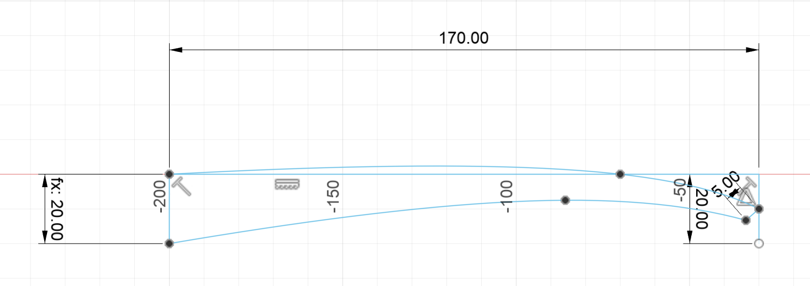
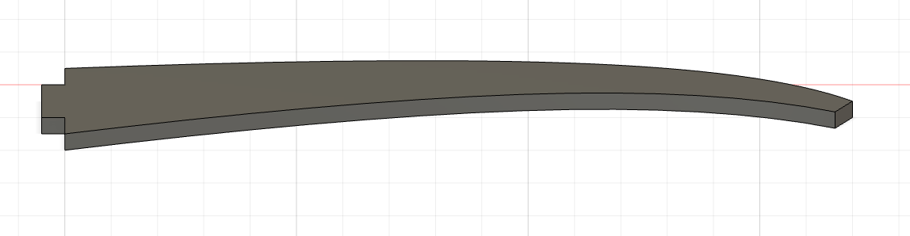
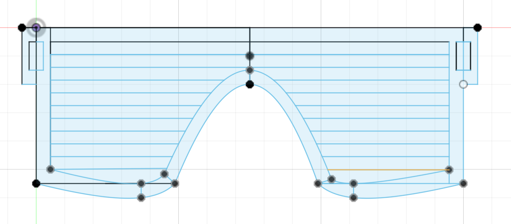
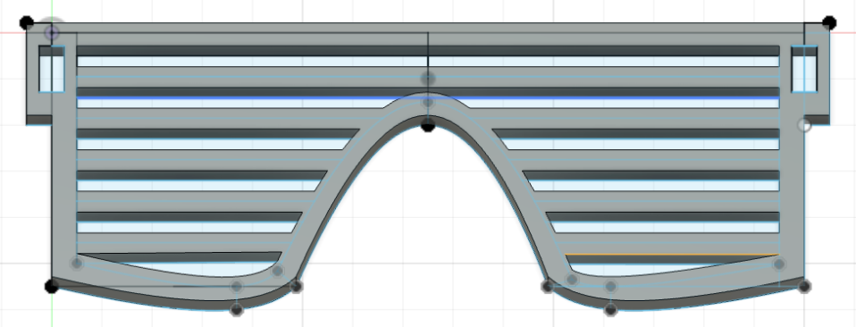
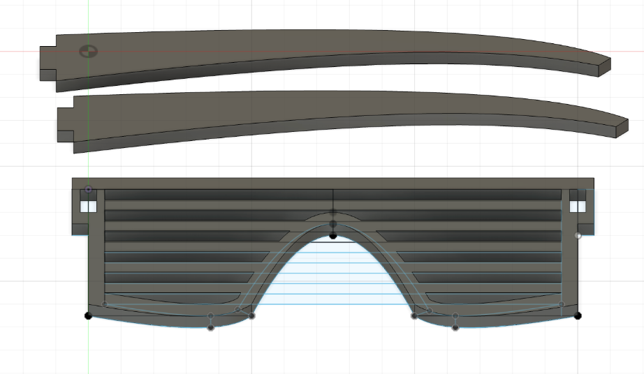
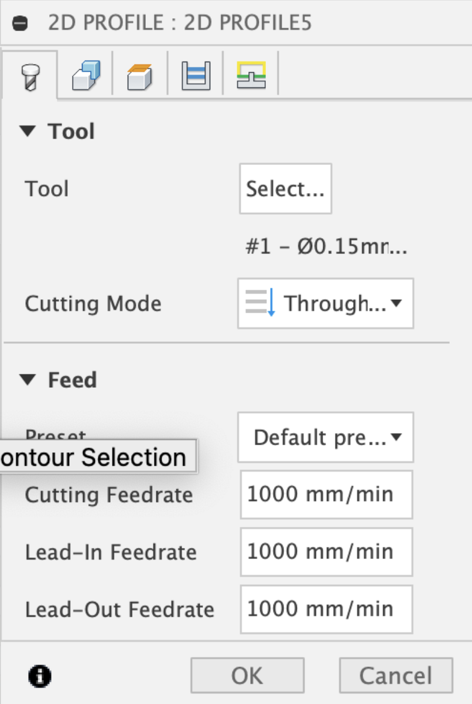
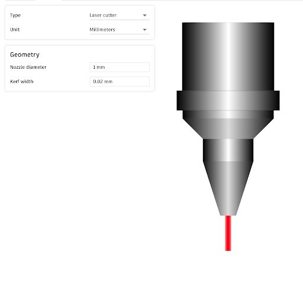
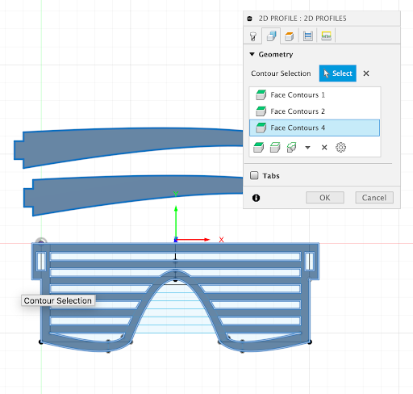
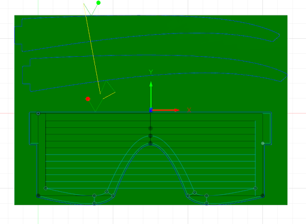
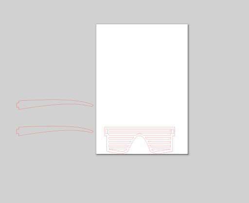

Laserskurður og vínilskurður
Vínilskurður
Ég byrjaði á því að hlaða niður forritinu inkscape
Svo ákvað ég að búa til límmiða úr logo-inu á fatamerkinu hjá bróður mínum þá fór ég á vinirjonasar.is og tók skjáskot af því þar.
Eftir það smellti ég á new document í inkscape og svo fór ég í document properties og stillti stærðina í 100x50cm.
Svo dróg ég jpg myndina inn í inkscape og fór svo í trace bit map sem breytti pixlunum í vigra eins og má sjá á mynd 1 og 2
Svo þurfti að breyta aðeins stillingunum í fill and stroke sem Hafliði hjálpaði mér við. Svo vistaði ég file-ið sem .svg og þá var það tilbúið í skurðinn. Hafliði hjálpaði mér svo við uppsetningu á Vínilskeranum en límmiðinn kom svo svona út.

Laserskurður
Ég ákvað að gera pressfit módel af project X partý gleraugum.
Ég byrjaði á því að hanna hliðarnar á gleraugnum sjálfum en þar sem einu parametrarnir sem skiptu máli voru hæðin á hliðunum sem tengjast fremri hliðinni og breiddin inn í gatið.

Sem fékkst að lokum svona þegar extrude var á stærð við þykkt efnis

Þar sem báðar hliðarnar eru eins þá notaði ég þennan tvisvar í stað þess að hanna nýjan.
Svo hannaði ég fremri hlutann og gerði það út frá auga og notaði parametra á gatinu og breyddinni og hæðinni á gleraugunum

Svo notaði ég extrude og valdi þykkt á efni og fékk

Svo nýtti ég mér þetta video https://www.youtube.com/watch?v=D1Btaqhog9E við leiðbeiningar á því hvernig ég stilli upp hönnuninni til að gera hana tilbúna fyrir skurðinn.
Fyrst lagði ég alla hlutina á sama flöt eins og má sjá á myndinni fyrir neðan

Svo smellti ég á manufacture, svo fabrication, svo cutting og 2D profile. Þá á að koma upp lítill gluggi sem lítur svona út.

Hér smellti ég á tool og svo bjó ég til nýtt Tool og valdi laser cutter og lét kerf vera 0.02

Svo fór ég í geometry og smellti á alla hlutina og svo á OK

Þá fékk ég þetta.

Síðan smellti ég á Post Process og valdi ég Autodesk.dxf post og vista það. Svo opnaði ég vistaða file-ið í með Inkscape

Eftir það þá crashaði tölvan mín alltaf þegar ég opnaði file-ið í inkscape þannig ég fékk að nota tölvu úr VR3 til að klára verkefnið en er því ekki með fleiri myndir af uppsetningunni. En svo stilti ég stærðina á blaðinu, breytti tillingum í fill and stroke og færði hlutina til svo að þeir taki sem minnst pláss á skurðarfleti.
Svo vista ég það sem pdf og svo kom þetta að lokum svona út.